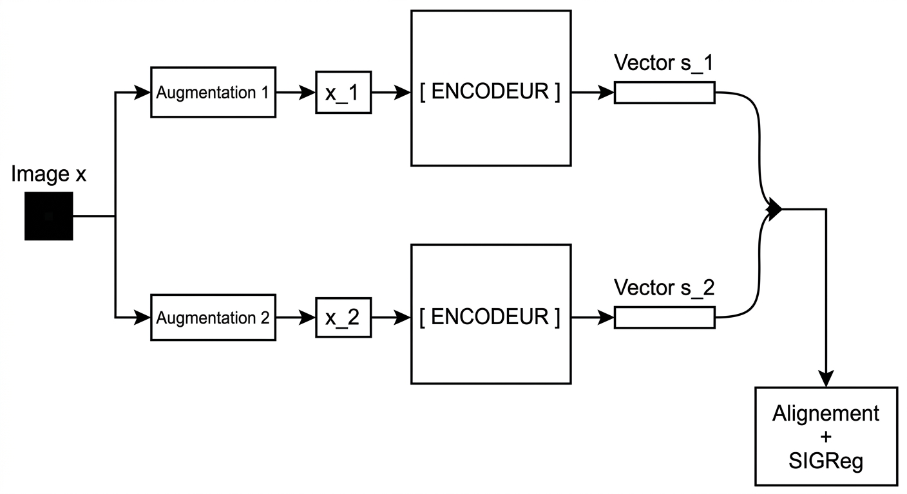

Computer Vision · Imagerie Médicale · Self-Supervised Learning
Apprendre à voir avant d'apprendre à classer
Entraîner un encodeur d'images d'IRM cérébrales sans la moindre étiquette, avec une architecture type LeJEPA, puis vérifier la qualité des représentations obtenues avec un simple classifieur linéaire.
- PyTorch
- LeJEPA
- ViT
- timm
- scikit-learn
Le contexte
Le problème à résoudre
Le jeu de données de départ contient des IRM cérébrales réparties en quatre catégories : gliome, méningiome, tumeur pituitaire, et cas sans tumeur. Une version « dédupliquée » du dataset, débarrassée des coupes quasi identiques d'un même examen, m'a servi de base pour éviter que des images très proches ne se retrouvent à la fois dans le train et dans la validation (un piège classique en imagerie médicale, qui gonfle artificiellement les scores).
Plutôt que d'entraîner directement un classifieur supervisé, j'ai voulu tester une approche différente : apprendre d'abord de bonnes représentations des images sans utiliser les étiquettes, à la manière de LeJEPA, puis vérifier après coup si ces représentations suffisent à séparer les quatre classes avec un classifieur aussi simple que possible. L'idée sous-jacente : en imagerie médicale, les images non annotées sont abondantes, les étiquettes fiables beaucoup plus rares et coûteuses à obtenir.

L'approche
Comment j'ai construit la solution
Le cœur du système est un encodeur ViT-Small (via timm, pré-entraîné sur ImageNet puis adapté à des images de 128×128), entraîné avec du gradient checkpointing pour tenir en mémoire sur les GPU limités de Kaggle. Chaque image d'entraînement passe par deux augmentations indépendantes (recadrage aléatoire, retournement, légère rotation, jitter de couleur, flou gaussien) pour produire deux « vues » distinctes. Le modèle apprend à projeter ces deux vues au même endroit dans un espace latent : c'est la perte d'invariance, le principe central des méthodes à embeddings joints (JEPA, SimSiam, VICReg et consorts).
Le piège classique de ces méthodes, c'est l'effondrement : le réseau peut « tricher » en projetant toutes les images au même point, ce qui minimise trivialement la perte d'invariance sans rien apprendre d'utile. Pour l'éviter, j'ai utilisé SIGReg (Sketched Isotropic Gaussian Regularization) : un terme de régularisation qui projette aléatoirement les embeddings sur des directions 1D et vérifie, via leur fonction caractéristique, qu'ils suivent bien une gaussienne isotrope - autrement dit qu'ils occupent tout l'espace disponible plutôt que de s'entasser dans un coin. La perte totale combine les deux termes (98 % invariance, 2 % SIGReg), tout l'art étant de laisser SIGReg agir comme un garde-fou léger sans dominer l'apprentissage.
Pour suivre la progression sans polluer l'apprentissage des représentations, j'ai branché une sonde linéaire (une couche de normalisation + une couche linéaire) sur les embeddings, mais en coupant le gradient entre la sonde et l'encodeur : elle apprend à classer à partir de ce que l'encodeur produit, sans jamais influencer l'encodeur en retour. Entraînement sur 200 epochs, batch effectif de 256 obtenu par accumulation de gradient (micro-batchs de 64 répétés 4 fois), optimiseur AdamW, warmup puis décroissance cosinus, et précision mixte bfloat16.
Le déclic est venu en traçant, à chaque epoch, les métriques d'alignement et d'uniformité (Wang & Isola, 2020) plutôt qu'en ne regardant que l'exactitude de la sonde : elles m'ont permis de vérifier concrètement que les embeddings couvraient bien tout l'espace disponible, et de repérer tout de suite un début d'effondrement plutôt que de le découvrir a posteriori sur les résultats finaux.
Suivi de l'entraînement · 200 epochs
Exactitude de la sonde linéaire en ligne sur la validation, à chaque epoch. Survolez la courbe pour voir la valeur exacte.
Résultats
Ce que le modèle donne en pratique
Le chiffre qui compte vraiment n'est pas la sonde linéaire suivie en direct pendant l'entraînement (elle plafonne autour de 91 % et reste bruitée d'une epoch à l'autre), mais l'évaluation faite après coup : une fois l'encodeur totalement gelé, j'en extrais les embeddings « propres » (sans augmentation) du train et de la validation, je les standardise, puis j'entraîne une simple régression logistique par-dessus avec scikit-learn. Ce protocole, complètement découplé de l'apprentissage des représentations, donne 95,8 % d'exactitude en validation. La preuve que l'encodeur a appris, sans aucune étiquette, des représentations qui séparent déjà très bien les quatre classes.
Ce que j'ai retenu
Le vrai apprentissage
Ce projet m'a surtout appris à me méfier de la métrique qu'on regarde pendant l'entraînement. La sonde en ligne, entraînée en même temps que l'encodeur, donne une idée de la tendance, mais reste un indicateur biaisé et bruité. Seule une évaluation totalement découplée (encodeur gelé, extraction d'embeddings propres, classifieur ré-entraîné à part) donne un chiffre sur lequel on peut vraiment s'appuyer. Et sur le plan méthodologique, suivre l'alignement et l'uniformité à chaque epoch m'a fait comprendre, de façon très concrète, pourquoi les méthodes à embeddings joints s'effondrent si facilement sans garde-fou comme SIGReg.